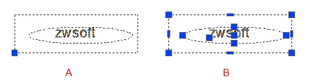

指定程序所有使用的预设设置。
当前配置：显示当前配置的名称。
当前图形：显示当前图形文件的名称。
此对话框中包含以下选项卡。
打开和保存
设置与打开、保存相关的选项。
文件保存
设置文件保存时的相关选项。
缺省保存格式
在下拉框中选择并设置文件保存的缺省格式。此时选定的文件格式是用 SAVE、SAVEAS、QSAVE 和 WBLOCK 保存所有图形时的默认格式。
使用高精度缩略图
保存文件时，控制是否以高精度保存文件的缩略图。提升缩略图精度会影响保存效率。
该设置保存在系统变量 THUMBQUALITY。
保存缩略预览图像
保存文件时，控制是否在“图形另存为”对话框的“预览”区域更新保存文件的预览图像。
增量保存百分比
控制图形文件中所允许耗损的空间总量。
该设置保存在系统变量 ISAVEPERCENT。
文件安全措施
为了避免数据丢失，设置文件自动备份等措施。
自动保存
勾选此选项后，将以指定的时间间隔自动保存图形文件。
可以使用系统变量 SAVEFILEPATH 设置自动保存文件的位置，自动保存文件名由系统变量 SAVEFILE 指定，该系统变量为只读属性。
仅保存当前图
勾选该选项，只自动保存当前图纸。
保存间隔分钟数
设置自动保存文件的时间间隔，时间单位为“分钟”。
该设置保存在系统变量 SAVETIME。
每次保存均创建备份
勾选此项，将在每次保存图形时创建图形的备份副本。
该设置保存在系统变量 ISAVEBAK。
维护日志文件
将文本窗口的内容写入日志文件，用户可通过日志文件查看每天的工作内容。
该设置保存在系统变量 LOGFILEMODE。
临时文件的扩展名
指定临时文件的扩展名。默认的扩展名是 .zw$。
数字签名
开启“数字签名”对话框，将数字签名证书附着到当前图形文件。
显示数字签名信息
勾选此项，在打开附着有数字签名证书的文件时，不论数字证书是否有效都将显示数字签名状态；否则仅在数字签名失效时显示数字签名状态。
该设置保存在系统变量 SIGWARN。
外部参照
控制外部参照的有关设置。
按需加载外部参照
控制外部参照的按需加载。
- 禁用：关闭外部参照的按需加载。
- 启用：按需加载外部参照，并锁定外部参照文件。使用按需加载外部参照可以提升文件加载性能，特别是对包含空间索引或图层索引的裁剪外部参照。
- 使用副本：打开按需参照，但加载外部参照文件的副本。因此，在编辑外部参照期间，允许其他用户修改外部参照文件。
该设置保存在系统变量 XLOADCTL。
保留外部参照图层的修改
确定是否保存对依赖外部参照图层的图层特性和状态的修改。
该设置保存在系统变量 VISRETAIN。
允许其他用户参照编辑当前图形
勾选此项，将在前图形被另一个或多个图形参照时，用户可在位编辑当前图形文件。
该设置保存在系统变量 XEDIT。
文件打开
设置最近使用过的文件及打开的文件。
要列出的最近使用文件数
设置“最近使用的文档”中所列出的最近使用过的文件清单和数目，数目有效值为 0 - 9。
在标题中显示完整路径
勾选此项，最大化图形后，在标题栏显示当前图形文件的完整路径。
每个图形均加载 zwcad.lsp
指定是否为每个图形加载 zwcad.lsp 文件。
自定义对象的代理图形
控制代理图形的显示。该设置保存在系统变量 PROXYSHOW。
显示“代理信息”对话框
勾选此项，创建代理对象时将显示“代理信息”对话框。该设置保存在系统变量 PROXYNOTICE。
文件
设置各种文件的储存路径。
搜索路径，文件名和文件位置
显示或修改各种文件的保存路径。
提示
为指定的搜索路径或文件名，提供提示信息。
浏览
为搜索路径中指定的文件名和文件位置，开启相对应的对话框并设定新位置。
添加
为指定的文件名添加新的搜索路径。
删除
删除指定文件名的搜索路径或设置。
上移
在一个文件名对应多个搜索路径时，将选定的搜索路径移动到前一个搜索路径之上。
下移
在一个文件名对应多个搜索路径时，将选定的搜索路径移动到下一个搜索路径之下。
显示
设置窗口元素、布局元素、十字光标大小、显示精度、显示性能以及参照编辑的褪色度等选项。
窗口元素
为绘图区域设置相关的窗口元素选项。
配色方案
设置用户界面风格为明（白色）或暗（黑色）。
该设置储存在系统变量 COLORTHEME。
图形窗口中显示滚动条
在绘图区域的右边和下边显示滚动条。
工具栏使用大按钮
以大按钮显示工具栏中的每个按钮。
显示工具提示
在功能区显示工具提示。
显示需等待的秒数
显示简单工具提示需等待的时间。
显示扩展工具提示
在功能区显示扩展的工具提示。
延迟等待的秒数
由简单工具提示跳转到扩展的工具提示需等待的时间。
自动菜单装载
在开启图形文件时，自动加载菜单文件。
显示文件选项卡
在绘图区域的上边显示文件选项卡。
颜色
打开“图形窗口颜色”对话框，为主程序窗口中的界面元素指定颜色。
字体
打开“字体”对话框，设置命令行的文字样式。
布局元素
设置布局空间的相关选项。
显示可打印区域
布局页面中显示虚线框，虚线框即为纸张的可打印区域。
显示图纸背景
在布局页面中显示一个与纸张大小一致的区域。
显示图纸阴影
选择此选项后，纸张的底部会有阴影的效果。
新建布局时显示页面设置管理器
选择此选项后，每次新建布局时，会自动弹出“页面设置管理器”对话框。
在新布局中创建视口
选择此选项后，每次新建布局时，会在布局中自动创建一个视口。
褪色度控制
控制外部参照对象在显示时和编辑时的褪色度值。
外部参照显示
指定外部参照在图形中显示的褪色度值。
该设置储存在系统变量 XDWGFADECTL。
在位编辑显示
指定外部参照对象在编辑过程中显示的褪色度值。有效值的范围从 0% 到 90%。默认设置是 70%。
设置值存储在系统变量 XFADECTL。
显示精度
设置绘制的对象的显示质量。
圆弧和圆的平滑度
控制圆弧、圆以及椭圆等对象的平滑度。也可以通过 VIEWRES 命令进行设置。
每条多段线曲线的线段数
设置多段线曲线的线段数。
该设置储存在系统变量 SPLINESEGS。
渲染对象的平滑度
设置着色和渲染曲面实体的平滑度。
该设置储存在系统变量 FACETRES。
曲面轮廓素线
为对象上每个曲面指定轮廓素线数目，有效取值范围为 0 到 2047。
该设置储存在系统变量 ISOLINES。
显示性能
设置系统的显示性能选项。
仅亮显光栅图像边框
勾选此项，选中光栅图像时仅亮显图像边框。
该设置储存在系统变量 IMAGEHLT。在二维线框视觉样式下，该设置仅在系统变量 SELECTIONEFFECT 设置为 1 有效。
应用实体填充
勾选此项，以实体填充的形式来显示对象。
该设置储存在系统变量 FILLMODE。
仅显示文字边框
显示文字的边框而不显示文字。
该设置储存在系统变量 QTEXTMODE。
以线框形式显示轮廓
勾选此项，以线框形式显示实体对象轮廓曲线。
该设置储存在系统变量 DISPSILH。
图形硬件设置
打开“图形硬件设置”对话框，设置硬件加速及其他显示性能选项。
十字光标大小
拖拽滑块，调节十字光标的显示尺寸。
该设置储存在系统变量 CURSORSIZE。
草图
设置自动捕捉、对象捕捉、自动追踪等选项。
自动捕捉设置
设置自动捕捉的相关选项。
磁吸
吸引且将光标锁定到检测到的最接近的捕捉特征点。
该设置储存在系统变量 AUTOSNAP。
显示自动捕捉工具提示
勾选此项，显示自动捕捉工具提示。
该设置储存在系统变量 AUTOSNAP。
显示自动捕捉标记
控制捕捉标记的显示。
显示自动捕捉靶框
控制自动捕捉靶框的显示。
该设置储存在系统变量 APBOX。
自动捕捉标记颜色
设置自动捕捉光标的颜色。
厚度
设置自动捕捉标记的边框厚度。
自动捕捉标记大小
通过拖曳指定自动捕捉标记的显示尺寸。
对象捕捉选项
设置对象捕捉时遇到图案填充对象的处理方式。
忽略图案填充对象
勾选此项，将不能捕捉到图案填充对象。
该设置储存在系统变量 OSNAPHATCH。
忽略尺寸界线
勾选此项，将不能捕捉到尺寸界线。
使用当前标高替换 Z 值
勾选此项，忽略对象捕捉位置的 Z 值，并使用为当前 UCS 设置的标高的 Z 值。
自动追踪设置
设置自动追踪的相关选项。
显示极轴追踪矢量
控制极轴追踪矢量的显示。勾选此项，将会在指定角度显示一个矢量。使用极轴追踪可以沿角度绘制直线。
显示全屏追踪矢量
控制全屏追踪路径的显示。勾选此项，将显示对齐矢量以辅助用户按照特定角度或按照与其他对象的特定关系绘制对象。
显示自动追踪工具提示
控制自动追踪工具提示的显示。
对齐点获取
设置在图形中获取矢量对齐点的方法。
自动
当靶框移到对象捕捉上时，自动显示追踪矢量。
用 Shift 键获取
当按 SHIFT 键并将靶框移到对象捕捉上时，显示追踪矢量。
靶框大小
拖拽滚动条，调节靶框的显示尺寸。该设置存储在系统变量 APERTURE。
对象捕捉靶框的显示由系统变量 APBOX 来控制，靶框只有在对象捕捉模式开启下并捕捉到相应的点时才会显示。靶框的大小则显示对象捕捉的范围。
| 注意 | 用户很容易将对象捕捉的靶框和选取状态下的拾取框混淆，要辨别清楚。对象选取状态下提示的拾取框由系统变量 PICKBOX 来控制大小。 |
选择集
设置在绘图区域中进行对象选择时的相关选项。
拾取框大小
拖拽滑块，调节拾取框的显示尺寸。
区域选择效果
设置选择操作时所选区域的相关选项。
命令处于活动状态时
命令处于活动状态并且命令行提示“选择对象”时，会显示选择预览。
该设置储存在系统变量 SELECTIONPREVIEW。
未激活任何命令时
命令未激活时，也会显示选择预览。
该设置储存在系统变量 SELECTIONPREVIEW。
区域效果设置
点击“区域效果设置”按钮，开启“视觉效果设置”对话框，设置选择预览的外观。
选择模式
设置在进行对象选择时的选择方式。
先选择后执行
勾选此项，允许先选择对象，再执行命令对所选对象进行操作。
该设置储存在系统变量 PICKFIRST。
用 Shift 键添加到选择集
勾选此项，按 SHIFT 键选择对象时，向选择集中添加或从选择集中删除对象。
该设置储存在系统变量 PICKADD。
对象编组
勾选此项，可以通过选择编组中的一个对象选择编组中的所有对象。
该设置储存在系统变量 PICKSTYLE。
关联填充
如果选择该选项，选择关联填充时也选定边界对象。
该设置储存在系统变量 PICKSTYLE。
支持自动窗口选择
勾选此项，选择对象时通过窗口或窗交进行选择。
该设置储存在系统变量 PICKAUTO。
允许在对象上按下进行框选或窗选
勾选此项，可以在对象上单击进行窗口或窗交选择。
该设置储存在系统变量 PICKAUTO。
允许按住并拖动以进行套索选择
勾选此项，可以按住并拖动进行套索选择。
该设置储存在系统变量 PICKAUTO。
窗口选择方法
在下拉列表中选择绘制选择窗口的方法。
该设置储存在系统变量 PICKDRAG。
属性选项板的对象限制
限制属性选项板中选定对象的数目。
该设置储存在系统变量 PROPOBJLIMIT。
选择效果颜色
设置选择对象时高亮光晕效果的颜色。
该设置储存在系统变量 SELECTIONEFFECTCOLOR。
夹点大小
拖拽滑块，调节夹点的显示尺寸。
该设置储存在系统变量 GRIPSIZE。
夹点
设置夹点的相关选项。
未选中夹点颜色
设置未被选中的夹点显示颜色。
选中夹点颜色
设置被选中的夹点显示颜色。
悬停夹点颜色
设置光标悬停在夹点上时夹点的显示颜色。
启用夹点
控制选取对象后，是否在对象上显示夹点。
该设置储存在系统变量 GRIPS。
激活图块内夹点
控制选取图块对象后，是否显示图块中对象的夹点。勾选此项，则同时显示图块和图块内对象的夹点，否则，则仅显示图块的夹点。

A：关闭“激活图块内夹点”B：打开“激活图块内夹点”
启用夹点提示
夹点开启的情况下，当移动光标到对象的夹点上时，是否显示夹点提示信息。
该设置储存在系统变量 GRIPTIPS。
显示动态夹点菜单
夹点开启的情况下，当移动光标到对象的夹点上时，是否显示动态夹点菜单。
允许按 Ctrl 键循环改变对象编辑方式行为
夹点开启的情况下，选中夹点时，按 Ctrl 键可以循环切换夹点编辑选项。
启用夹点吸附范围
控制夹点吸附范围的显示，并设置吸附范围。其取值范围为 0-10，预设值为 1。
该设置储存在系统变量 GRIPADSORB。
显示夹点时限制对象选择
当选择集中对象数目大于指定数目时，不显示夹点。预设值为 100。
该设置储存在系统变量 GRIPOBJLIMIT。
用户系统配置
控制系统相关选项的设置。
Windows 标准
控制在绘图区域中鼠标右键的作用。
双击进行编辑
控制绘图区域中的双击编辑操作。
该设置储存在系统变量 DBLCLKEDIT。
绘图区域中使用快捷菜单
单击鼠标右键时，在绘图区域显示快捷菜单。
自定义右键单击
开启“自定义右键单击”对话框。
该设置储存在系统变量 SHORTCUTMENU。
打开计时右键单击
勾选此项后，若快速单击鼠标右键，功能与按回车（Enter）键相同；若慢速单击鼠标右键，则显示右键快捷菜单。慢速单击的时间期限以毫秒（ms）为单位来设置。
默认模式
设置在没有选中对象时，单击鼠标右键的是重复上一个命令还是显示右键快捷菜单。若勾选了“打开计时右键单击”选项，“默认模式”将不可用。
编辑模式
设置在选中对象时，单击鼠标右键是重复上一个命令还是显示右键快捷菜单。
命令模式
设置在执行命令时，单击鼠标右键的含义。若勾选了“打开计时右键单击”选项，“命令模式”将不可用。
确认
当命令正在执行时，单击右键与按回车（Enter）键功能相同。“命令”右键快捷菜单将被禁用。
快捷菜单：总是启用
启用“命令”右键快捷菜单。
快捷菜单：命令选项存在时可用
当命令选项存在时，才启用“命令”右键快捷菜单。若无可用的命令选项，则单击鼠标右键与按回车（Enter）键功能相同。
拖放比例
当单位设置为无单位，即系统变量 INSUNITS 设置为 0 时，设置源、目标的单位内容。
源内容单位
设置插入到当前图形中的对象的单位。
该设置储存在系统变量 INSUNITSDEFSOURCE。
目标图形单位
设置在当前图形中的对象的单位。
该设置储存在系统变量 INSUNITSDEFTARGET。
字段
设置与字段相关的系统配置。
显示字段的背景
显示字段是否带有浅灰色背景，打印时不会打印背景色。
该设置储存在系统变量 FIELDDISPLAY。
字段更新设置
打开“字段更新设置”对话框。
该设置储存在系统变量 FIELDVAL。
VBA 宏设置
控制是否启用宏病毒防护。
启用宏病毒防护
在打开包含病毒的宏时，显示警告信息。
坐标数据输入的优先级
确定是否以从命令行以键盘输入坐标值来替代对象捕捉设置。
该设置储存在系统变量 OSNAPCOORD。
执行对象捕捉
执行对象捕捉总是替代键盘坐标输入。
键盘输入
坐标键盘输入总是替代执行对象捕捉。
键盘输入，脚本例外
键盘输入替代对象捕捉设置，脚本中的设置除外。
对象排序方式
设置对象的排序方式。
该设置储存在系统变量 SORTENTS。
对象选择
在对象选择期间，按创建的先后次序排列可选择的对象。如果在对象选择期间选中了两个重叠的对象，最新创建的对象将视为被选中对象。如果不选择此选项，将随机确定被选中对象的排列次序。
对象捕捉
在使用“对象捕捉”时，按照创建的先后次序排列可选择的对象。如果使用“对象捕捉”时选中了两个重叠的对象，最新创建的对象视为捕捉到的对象。如果不选择此选项，将随机确定“对象捕捉”的次序。该设置保存在图形中。
重生成
在使用 REGEN 或 REGENALL 命令时，按创建的先后次序排列并重生成图形中的对象。如果不选择此选项，将随机确定对象的重生成次序。该设置保存在图形中。
打印
在打印时，按照创建的先后次序排列并打印图形中的对象。如果不选择此选项，将随机确定对象的打印次序。该设置保存在图形中。
关联标注
设置标注的关联性。
使新标注可关联
勾选此项，新创建的标注为关联标注。当修改与关联标注相关联的对象时，关联标注也随之自动进行调整。
该设置储存在系统变量 DIMASSOC。
线宽设置
开启“线宽设置”对话框。
隐藏消息设置
开启“隐藏消息设置”对话框，用户可控制以下弹窗是否显示。
- 多行文字 - 未保存的更改：创建或编辑多行文字后，未保存即按 Esc 键退出命令，显示弹窗提示用户是否保存文字更改。
- 缺少 SHX 文件：打开的文件中 SHX 字体缺失时，显示弹窗提示用户是否进行替换。
- 参照 - 未融入的参照文件：打开文件时未找到参照文件，显示弹窗提示用户是否忽略缺失的参照文件。
- 参照 - 相对路径：如果当前图形中具有相对路径的外部参照，将当前图形另存至其他位置时，显示弹窗提示用户是否更新路径。
- DWG 文件重新关联到 ZWCAD：中望CAD 未设置为 DWG 文件默认程序，启动中望CAD 时，显示弹窗提示用户是否将 DWG 文件与中望CAD 关联。
- 注释比例 - 大量注释比例：大量的注释比例会影响图形性能，打开的图形中存在大量注释比例时，显示弹窗提示用户是否重置比例列表。
- 图案填充 - 冻结的图层：冻结图层上无法创建填充，如果 HPLAYER 系统变量设置为冻结的图层，执行填充时，显示弹窗提示用户是否将该图层解冻。
- OLE 文字大小：通过剪切板向图形中粘贴 Excel 或 Word 的内容时，显示“OLE 文字大小”对话框。
- 调整屏幕分辨率：中望CAD 在不合适的屏幕分辨率或显示比例下无法运行，如显示比例设置为 150%，启动中望CAD 时，显示弹窗提示用户需调整分辨率或显示比例。
- 打印 - 正在处理后台作业：发布图纸时，勾选“后台打印”，显示弹窗提示用户正在处理后台作业。
- 阵列 - 阵列编辑状态：编辑关联阵列时，选择源对象进行编辑，显示弹窗提示用户当前的阵列编辑状态。
- 阵列 - 关联的路径阵列：通过鼠标在绘图区域拖动路径阵列时，显示弹窗提示用户当前操作将丢失路径阵列与路径曲线的关联性。
- 文件比较忽略实体：文件比较不支持比较OLE、三维实体等对象，如果图纸中包含不支持的对象类型，显示弹窗提示用户不支持的对象类型将被隐藏。
- 漫游和飞行 - 更改为透视视图：漫游和飞行时仅支持透视视图，如果当前为平行视图，显示弹窗提示用户是否更改当前视图。
- 比较 - 输出比较快照：输出文件比较快照时，显示弹窗提示用户快照输出后将被通知。
- 外部参照比较 - 修改的外部参照：外部参照比较过程中，如果外部参照被修改，按提示重载外部参照，显示弹窗提示用户是否要结束比较。
- 外部参照重新加载 - 比较更改：未处于外部参照比较过程中，如果外部参照被修改，按提示重载外部参照，显示弹窗提示用户是否要比较附着的外部参照与参照图形文件之间的差异。
- 快捷特性 - 恢复默认：在“自定义用户界面”对话框中“快捷特性”节点右键选择“恢复默认”，显示弹窗提示用户将恢复默认的快捷特性设置。
- 快捷特性 - 移除未定义的对象类型：在“自定义用户界面”对话框中单击“快捷特性”节点，如果对象类型列表中存在未定义任何特性的对象类型，关闭对话框时，显示弹窗提示用户是否移除未定义的对象类型。
- STEP 输入设置：输入 STEP 文件时，显示“STEP 输入设置”对话框。
- 打印 - 无法使用此绘图仪配置：当前打印配置中的打印设备不可用时，执行打印弹出缺少绘图仪配置的提示框。
- 参数过滤器 - 新参数：表达式管理器中选中“表达式中使用的所有项”过滤器时，创建新的参数时，显示弹窗提示创建的新参数与当前的过滤器不匹配。
- 受约束的可变块：将约束应用于可变块时，显示弹窗提示应用约束后会不显示可变块夹点。
- 图纸重复打开：当重复打开同一张图纸时，显示弹窗提示用户选择跳转到已打开的图纸标签页或者以只读的形式打开图纸。
- 动态观察：在二维线框模式下使用动态观察操作时，提示切换至三维视觉样式，以获得更佳的浏览体验。
- 命令行 - 关闭：关闭命令行时，显示弹窗提示用户如何快速再次打开命令行使其显示。
配置
设置自定义的配置。
可用配置
列表显示可用配置。
置为当前
在列表中选择配置，将其设置为当前配置。
添加到列表
开启“添加配置文件”对话框，指定新的配置的名称以及说明文字，并增加到列表中。
重命名
开启“重命名配置文件”对话框，为指定的配置重新指定新名称和说明文字。
删除
删除列表中指定的配置。
输出
开启“导出配置文件”对话框，将当前选定配置写入指定的 .arg 文件。
输入
开启“导入配置文件”对话框，指定 .arg 文件以导入配置。
重置
将选定配置中的值重置为系统默认设置。
打印
设置打印相关的选项。
新布局的默认打印设置
为新建的布局指定默认的打印机。
用作默认的输出设备
指定列表中的某款打印机作为新图形的默认输出设备。
使用上次的可用打印设置
指定新建的布局使用上一次可用的打印设置。
添加或编辑绘图仪
显示“添加绘图仪”对话框。
打印到文件
打印到文件操作的默认位置
设定“打印到文件”的默认输出位置。
指定打印偏移相对于
指定图形的偏移是从纸张的左下角开始计算还是从可打印区域的左下角开始计算。
该设置储存在系统变量 PLOTOFFSET。
图纸边缘
设定图形打印偏移的相对位置为图纸边缘。
可打印区域
设定图形打印偏移的相对位置为可打印区域。
新图形的默认打印样式
新建图形时，图形文件的默认打印样式。
新建或编辑打印样式表
打开文件浏览对话框，选择打印样式表进行编辑，或新建打印样式表。
常规打印选项
OLE 打印质量
设置 OLE 对象的默认打印质量。
隐藏系统打印机
控制在“打印”对话框中是否隐藏系统打印机。该设置并不隐藏通过“添加绘图仪向导”配置的系统打印机。
打印戳记设置
显示“打印戳记”对话框。
在线
在“在线”选项卡中，控制是否启用云存储，选择云存储服务提供商以及设置自动同步文件的方式。
启用云存储
勾选启用云存储，云存储服务供应商、自动文件同步设置以及同步目录设置模块将启用。
云存储服务供应商
选择云存储服务提供商并获取授权。
选择下拉框
可从中选择云存储服务提供商。云存储当前支持哪些供应商由中望CAD 云互联的配置模块动态检测获取。目前支持百度云盘、华为云空间。
获取授权
获取（或重新获取）当前云存储供应商的授权。如果未获取授权则显示为“未授权”，反之则显示用户名。
自动文件同步设置
设置将本地图纸的副本保存至云端的方式。
在我保存时自动同步
在保存本地文件时，自动同步到云端。
仅同步我选择的文档
仅同步用户指定的文档。
同步目录设置
设置云存储功能本地文件夹位置。
本地同步目录
指定当前云存储设备所对应的本地同步路径。